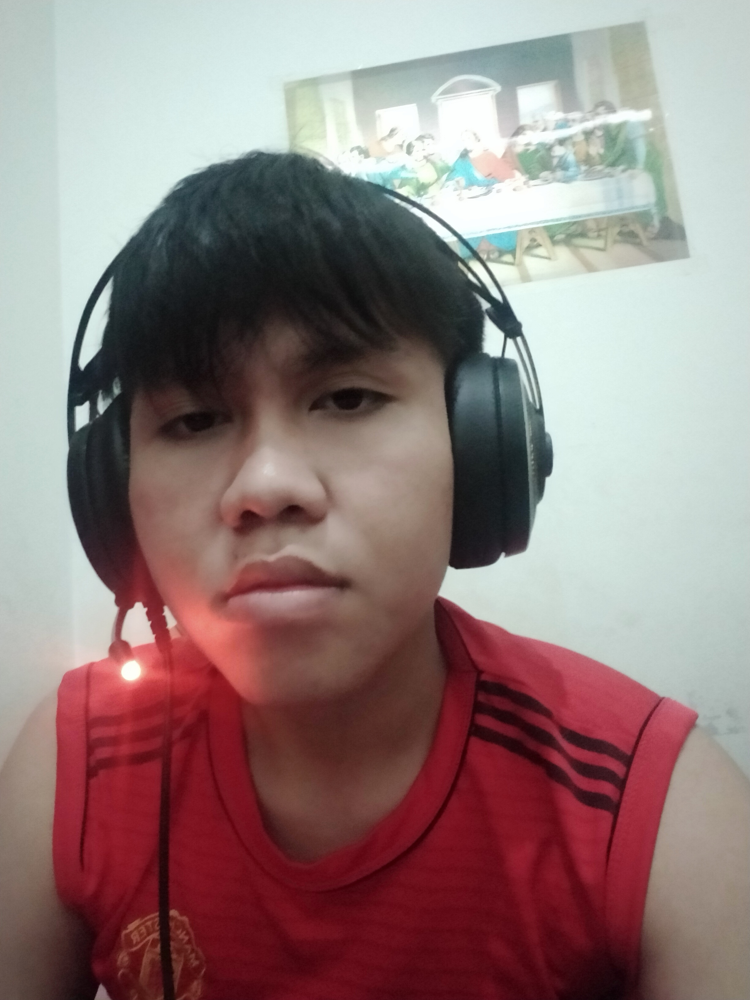

Home
Download CV
Contact
About me

Gian Aji Satya
(Web Developer)
Overview
Hi, saya adalah calon web developer masa depan, saat ini sedang belajar HTML 5.
Skill
Pengalaman
HTML (Beginner)
CSS (Beginner)
Javascript (Beginner)
Mengisi Dinus Inside
Menjadi Pengurus PMK Perdana
Membuat Web dari HTML